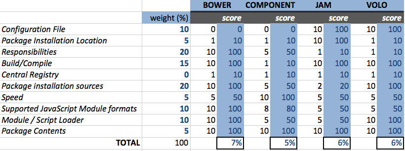

Package Management
Wil Moore III
@wilmoore <wil.moore@wilmoore.com>
HTML5 Denver, October 22, 2012
## what is Package Management? - Manifest of component or application dependencies - Install dependencies and its dependencies - Resolve version issues
## System-Level Package Managers - Aptitude (Ubuntu) - RPM (Redhat, etc.) - Homebrew (Mac OS X)
## Server-Side Package Managers - Bundler (Ruby) - Ivy/Maven (Java) - SBT (Scala) - Composer (PHP) - NuGet (.NET) - NPM (NodeJS)
## Client-Side Package Managers - Bower (@fat, @maccman, @addyosmani, @paulirish) - Component (@tjholowaychuk) - Jam (@caolan) - Volo (@jrburke)
### What problems are we solving? - Dependencies of dependencies - Manually download, unpack, copy files - Manually resolve multi-version issues
### Front-End Package Manager Comparison [github.com/wilmoore/frontend-packagers](https://github.com/wilmoore/frontend-packagers)
## How to choose? #### Weighted Scoring 
### Random Tips - Write modules for AMD, CJS, and globals (window.*) - Check out UMD @ [https://github.com/umdjs/umd](https://github.com/umdjs/umd) - Submit to multiple registries (Jam, Bower, and NPM)
### These Slides [slidedecks.wilmoore.com/2012-html5denver](http://slidedecks.wilmoore.com/2012-html5denver) ### More Presentations [slidedecks.wilmoore.com](http://slidedecks.wilmoore.com)
[@wilmoore](http://twitter.com/wilmoore) ✗ [@ github.com](http://github.com/wilmoore)